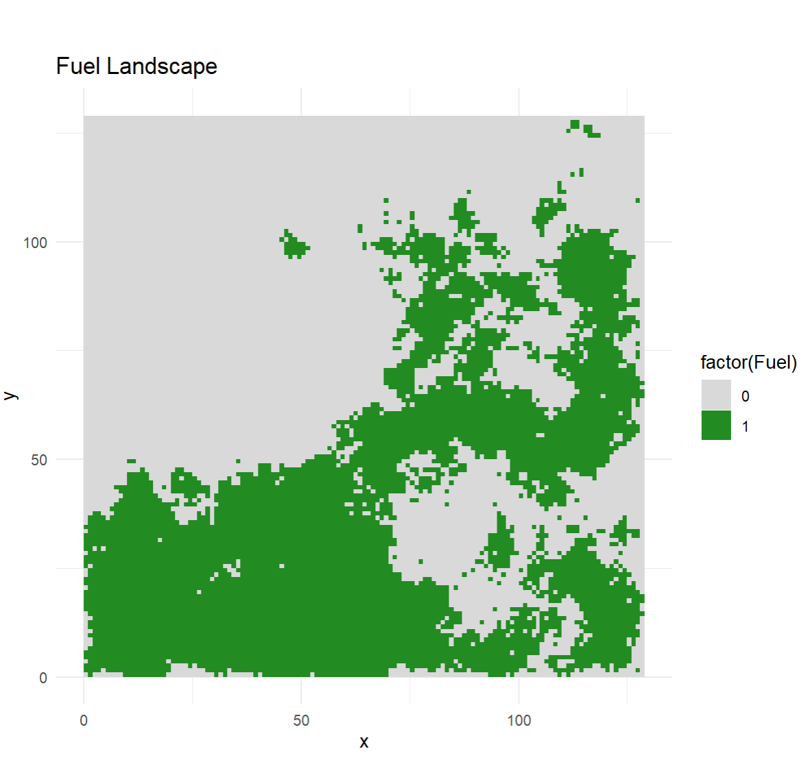
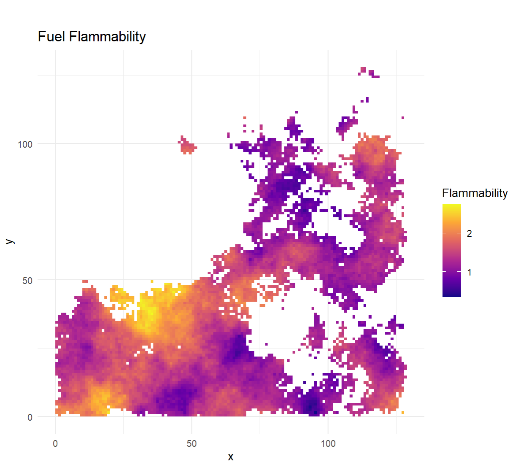
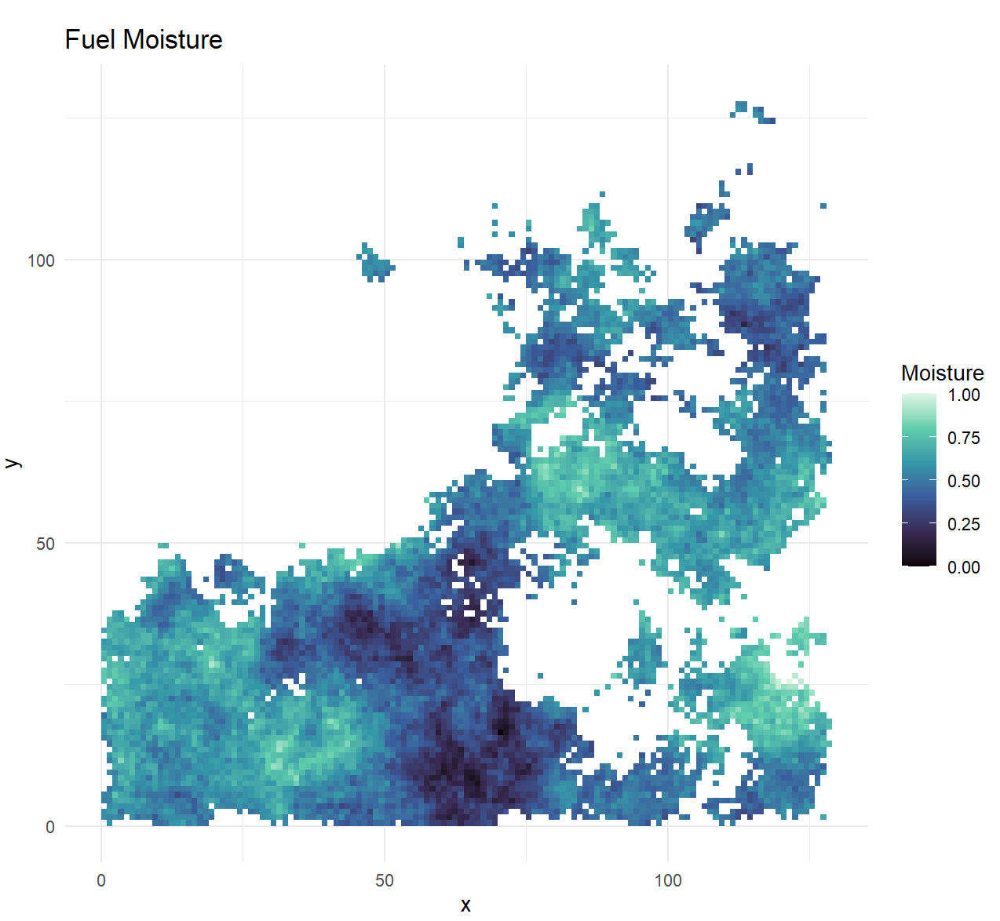
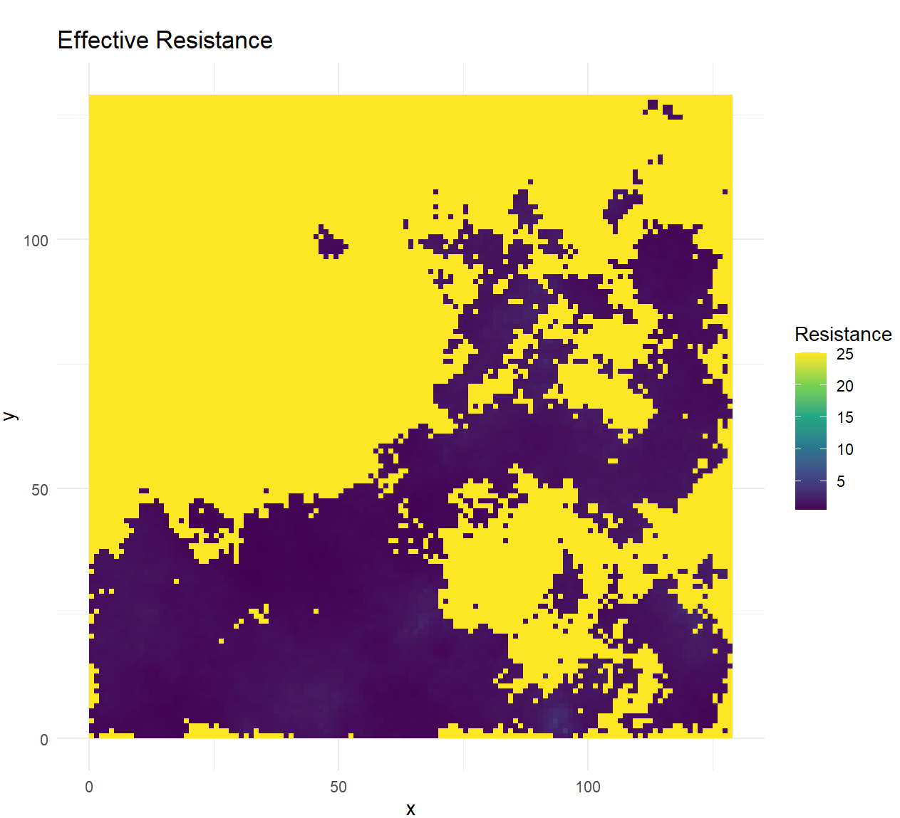
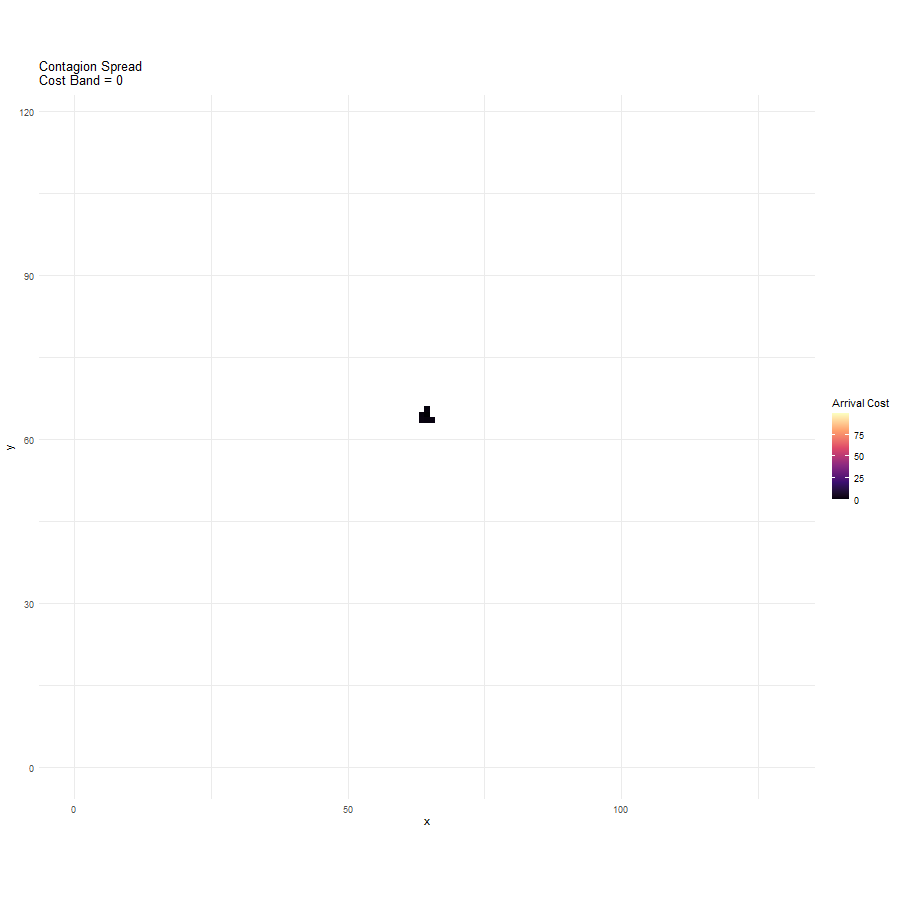
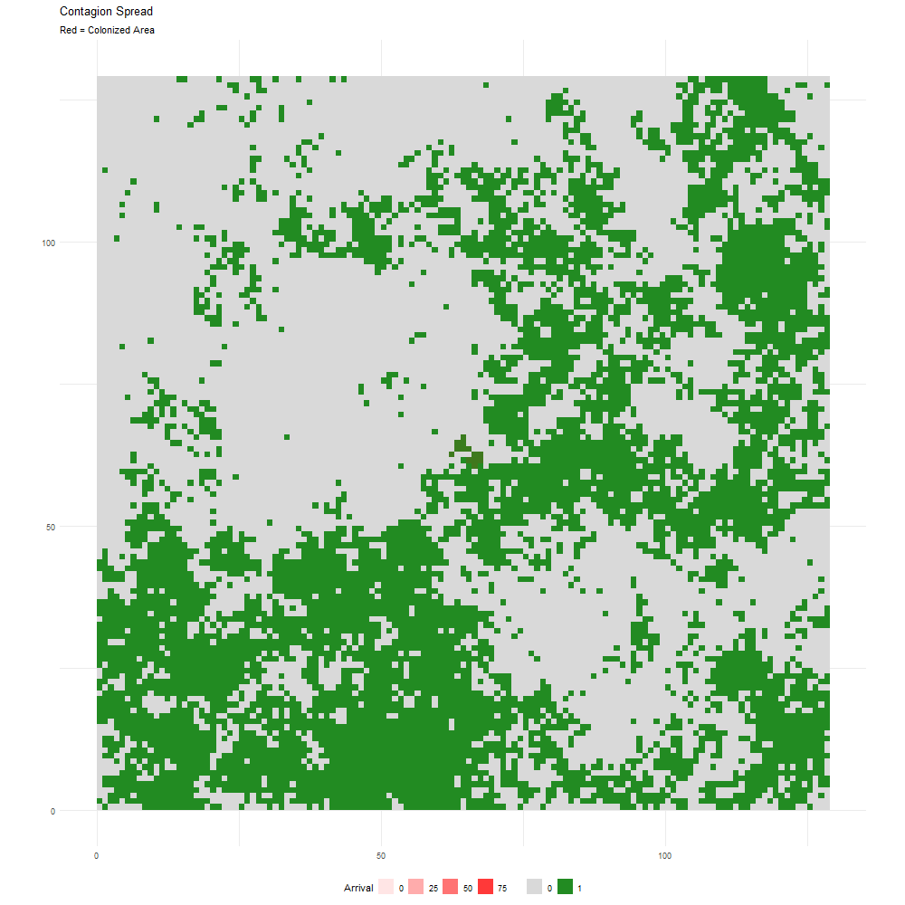
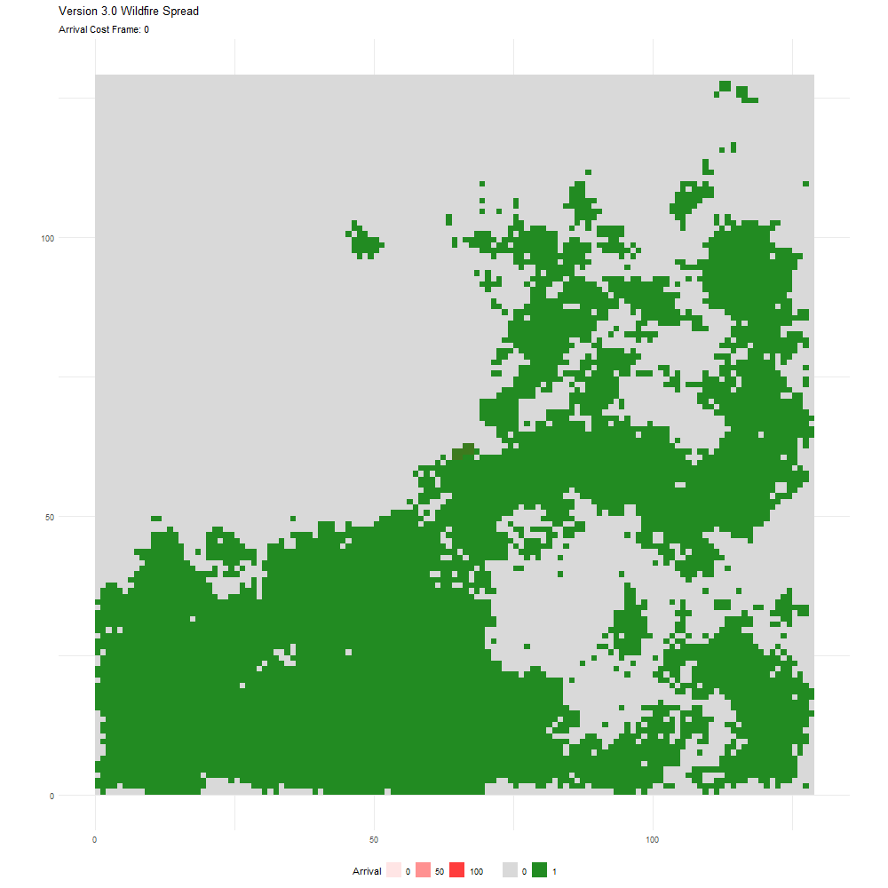
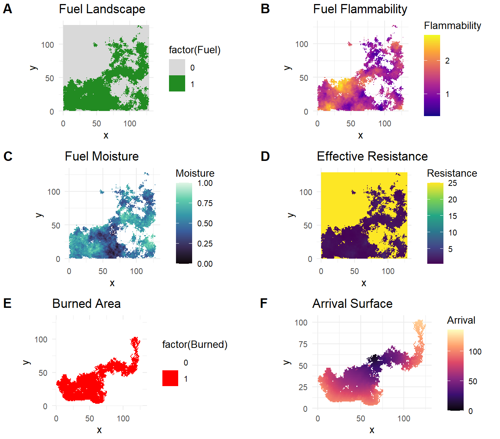
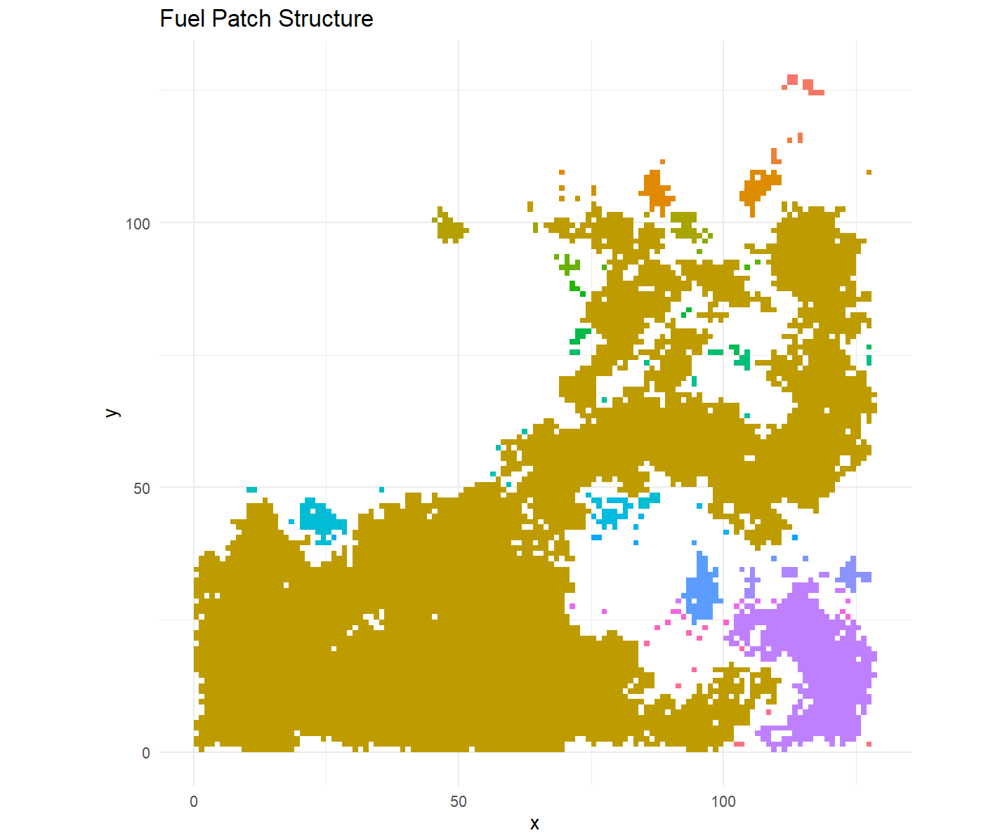
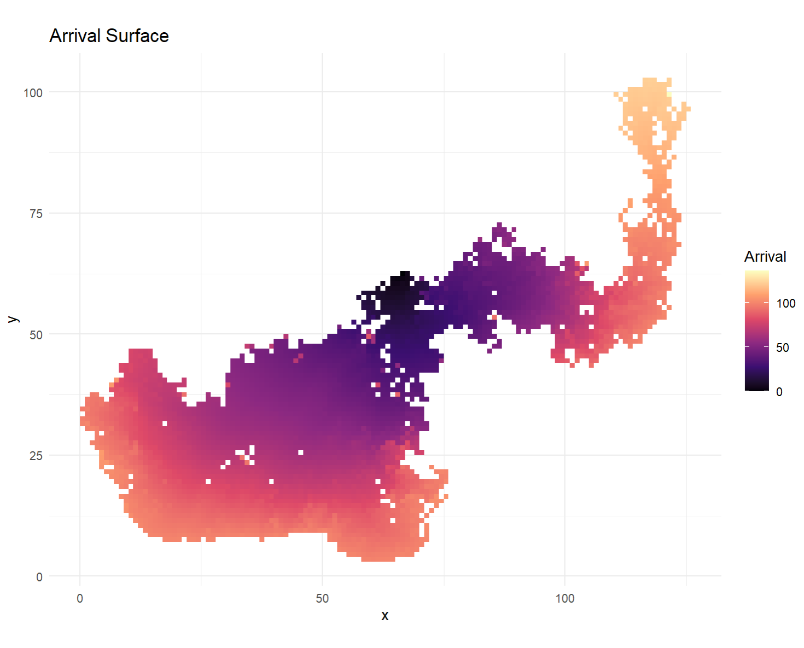

11 Spreading and the Wildfire Behaviour Framework
11.1 Introduction
Spreading processes are a fundamental component of many landscape simulation models because they represent the movement of organisms, disturbances, materials, or information across space. In landscape ecology, spreading algorithms are commonly used to investigate phenomena such as wildfire propagation, disease outbreaks, invasive species expansion, habitat connectivity, hydrological flow, and contagion dynamics. The underlying principle is that local interactions between neighbouring cells can generate complex large-scale spatial patterns over time. By representing landscapes as grids or networks, simulation models can evaluate how landscape structure influences the ability of a process to move between locations, making spreading mechanisms a powerful tool for understanding connectivity and resilience within spatial systems.
In the Wildfire Behaviour Framework, spreading is implemented through a Dijkstra-based least-cost propagation algorithm. Rather than allowing fire to expand uniformly in all directions, the model assigns each cell a resistance value that reflects local fuel conditions. Fire spreads from the ignition point to neighbouring cells by accumulating movement costs, and the path of propagation is determined by the least-cost routes through the landscape. This approach transforms the wildfire into a connectivity process where movement is controlled by spatial heterogeneity rather than simple geometric distance. Areas with low resistance create highly connected pathways for fire spread, whereas areas with high resistance function as barriers that reduce connectivity and limit fire growth.
A key feature of the Wildfire Behaviour Framework is that spreading dynamics emerge from the interaction of multiple drivers. Fuel flammability increases the probability of successful ignition and reduces resistance to spread, while fuel moisture increases resistance and suppresses fire propagation. Wind introduces anisotropy (a structural property of non-uniformity in different directions) into the spreading process by reducing movement costs in downwind directions and increasing spotting opportunities across fuel breaks. Consequently, the fire does not simply expand outward from the ignition source; instead, it preferentially moves through corridors of highly flammable, dry fuel that are aligned with favourable wind conditions. The resulting burn pattern reflects both the structural arrangement of fuel patches and the functional characteristics of the fuels themselves.
This example demonstrates how spreading models can be used to investigate the relationship between landscape connectivity and disturbance dynamics. The outcomes illustrate that wildfire modelled behaviour is governed by both local fuel properties and broader connectivity patterns. By combining spatially explicit fuel characteristics with a spreading algorithm, the framework provides a useful experimental platform for exploring how changes in landscape structure influence wildfire transmission, fuel connectivity, and disturbance resilience.
11.2 Framework Parameters and Functions
11.2.1 User Parameters
The following assumptions are used to parameterize the framework:
landscape_size <- 129
Defines the number of rows and columns in the square landscape grid, creating a 129 × 129 cell simulation area. The 129 × 129 cell landscape was selected because the midpoint displacement Neutral Landscape Model (NLM) used by nlm_mpd() operates most efficiently on grid dimensions of the form 2ⁿ + 1. Using a 129 × 129 grid (2⁷ + 1) ensures proper fractal landscape generation, minimizes edge artefacts, and provides a unique central cell for ignition placement while maintaining sufficient spatial complexity for analysing fuel connectivity and wildfire spread dynamics.
fuel_proportion <- 0.40
Specifies the proportion of the landscape occupied by burnable fuel, with 40% of cells designated as fuel and 60% as non-fuel.
fuel_fragmentation <- 0.7
Controls the spatial clustering and fragmentation of fuel cells, influencing the size, shape, and connectivity of fuel patches across the landscape by using a Neutral Landscape Model (NLMR::nlm_mpd()).
fuel_spread_cost <- 1
Represents the baseline resistance or cost of wildfire spreading through fuel cells before adjustments for flammability, moisture, and wind effects.
fuel_break_resistance <- 25
Defines the resistance associated with non-fuel cells, making fire spread across fuel breaks substantially more difficult than through fuel.
base_spotting_probability <- 0.05
Sets the baseline probability that a fire can spot across a fuel break and ignite a new location beyond the immediate fire front.
maximum_fire_energy <- 100
Establishes the maximum amount of cumulative spread energy available to the wildfire, limiting the total extent of fire propagation across the landscape.
minimum_flammability <- 0.25
This parameter defines the lowest flammability value that can be assigned to a fuel cell within the simulated landscape. Cells with flammability values near this threshold are relatively difficult to ignite and contribute less to wildfire spread, spotting, and fire intensity.
maximum_flammability <- 3
This parameter defines the highest flammability value that can occur in the fuel landscape and establishes the upper limit of fuel combustibility. Cells with values near this maximum ignite more readily, exhibit lower spread resistance, and contribute more strongly to spotting and fire propagation.
flammability_roughness <- 0.60
This parameter controls the spatial pattern and degree of clustering in the generated flammability surface created using the neutral landscape model. Higher roughness values produce larger and more spatially autocorrelated regions of similar flammability, while lower values generate a more heterogeneous and fragmented pattern of fuel combustibility.
moisture_roughness <- 0.80
This parameter controls the spatial structure of the fuel moisture surface, influencing how moisture is distributed across the landscape. A higher roughness value creates larger areas of similar moisture conditions, producing broad dry or wet zones that can strongly influence wildfire spread and resistance patterns.
Code
###############################################################################
# WILDFIRE CONNECTIVITY & FUEL BEHAVIOUR FRAMEWORK
# VERSION 3.0
#
# FEATURES
#
# 1. NLM fuel landscape
# 2. Fuel fragmentation
# 3. Fuel flammability
# 4. Fuel moisture
# 5. Dynamic resistance
# 6. Dijkstra spread
# 7. Spotting
# 8. Wind spread
# 9. Wind energy
# 10. Arrival surfaces
# 11. Anisotropy analysis
# 12. Fragmentation analysis
###############################################################################
#==============================================================================
# PACKAGES
#==============================================================================
required_packages <- c(
"terra",
"NLMR",
"ggplot2",
"viridis",
"cowplot",
"gganimate",
"gifski"
)
for(pkg in required_packages){
if(!require(pkg, character.only=TRUE)){
install.packages(pkg)
library(
pkg,
character.only=TRUE
)
}
}
#==============================================================================
# USER PARAMETERS
#==============================================================================
set.seed(123)
landscape_size <- 129
fuel_proportion <- 0.40
fuel_fragmentation <- 0.7
fuel_spread_cost <- 1
fuel_break_resistance <- 25
base_spotting_probability <- 0.05
maximum_fire_energy <- 100
#==============================================================================
# FUEL BEHAVIOUR PARAMETERS
#==============================================================================
minimum_flammability <- 0.25
maximum_flammability <- 3
flammability_roughness <- 0.60
moisture_roughness <- 0.80
create_animation <- TRUE
animation_directory <- "c:/data/test"11.2.2 Wind Module
The wind module introduces directional fire behaviour into the simulation by modifying wildfire spread according to the alignment between local fire movement and the prevailing wind direction. For each potential spread event, a wind-alignment factor is calculated and used to adjust spread resistance, spotting probability, and available fire energy, allowing fire to move more easily and over greater distances in downwind directions while experiencing greater resistance when spreading against the wind. This creates anisotropic fire behaviour whereby burn patterns become elongated along the wind vector, producing more realistic wildfire dynamics than isotropic spread models and allowing the interaction of wind, fuel conditions, and landscape connectivity to influence overall fire growth.
11.2.2.1 Wind Parameters
wind_direction <- 90
Specifies the direction toward which the wind is blowing using a mathematical angle convention, where 0° = East, 90° = North, 180° = West, and 270° = South.
wind_strength <- 0.75
Defines the overall magnitude of wind influence on wildfire behaviour, with larger values increasing the effect of wind on spread dynamics throughout the simulation.
wind_cost_strength <- 0.75
Controls the degree to which wind reduces spread resistance in aligned directions and increases the relative advantage of downwind fire movement.
wind_spotting_strength <- 2
Determines how strongly wind enhances spotting probability, allowing embers to more readily cross fuel breaks and ignite new locations downwind.
wind_energy_strength <- 0.50
Controls the influence of wind on the local fire energy budget, increasing the potential spread distance and fire growth capacity in directions aligned with the wind.
get_movement_angle()
This function calculates the direction of fire spread between a source cell and a neighboring cell by computing the angle of movement in degrees. The resulting angle is standardized to a 0–360° range, allowing movement directions to be directly compared with the specified wind direction during wildfire spread calculations.
get_wind_alignment()
This function calculates the degree of alignment between a fire movement direction and the prevailing wind direction. By converting the angular difference into a cosine-based alignment value ranging from -1 to 1, it quantifies whether fire spread is occurring downwind (positive alignment), crosswind (near zero alignment), or against the wind (negative alignment), allowing wind effects to influence spread costs, spotting probabilities, and fire energy.
Code
#==============================================================================
# WIND
#==============================================================================
wind_direction <- 90#Northward: using a mathematical angle convention, not a meteorological one.
wind_strength <- 0.75
wind_cost_strength <- 0.75
wind_spotting_strength <- 2
wind_energy_strength <- 0.50
#==============================================================================
# UTILITY FUNCTIONS
#==============================================================================
get_movement_angle <- function(from_xy,to_xy){
dx <- to_xy[1] - from_xy[1]
dy <- to_xy[2] - from_xy[2]
ang <- atan2(
dy,
dx
) * 180/pi
if(ang < 0){
ang <- ang + 360
}
ang
}
get_wind_alignment <- function(
movement_angle,
wind_direction
){
angle_difference <-
abs(
movement_angle -
wind_direction
)
if(angle_difference > 180){
angle_difference <-
360 - angle_difference
}
cos(
angle_difference *
pi/180
)
}11.2.3 Fuel Landscape
This section of code generates a binary fuel landscape from a continuous neutral landscape model (NLM) using the midpoint displacement algorithm (nlm_mpd). The algorithm first creates a spatially autocorrelated surface whose roughness is controlled by the fuel_fragmentation parameter, producing landscapes with varying degrees of fuel clustering and fragmentation. The resulting NLM is converted to a raster object and the cell values are extracted to determine a threshold corresponding to the desired fuel_proportion. Cells with values greater than this threshold are classified as fuel (1), while all remaining cells are classified as non-fuel (0), creating a binary fuel map that represents the distribution of burnable and non-burnable areas across the landscape. Finally, the actual proportion of fuel cells is calculated to verify that the generated landscape closely matches the user-specified fuel proportion and provides the basis for all subsequent wildfire spread, connectivity, and fuel behaviour analyses.

Code
#==============================================================================
# FUEL LANDSCAPE
#==============================================================================
nlm <- nlm_mpd(
ncol = landscape_size,
nrow = landscape_size,
roughness = fuel_fragmentation
)
nlm <- rast(nlm)
vals <- values(nlm)[,1]
threshold <- quantile(
vals,
probs=1-fuel_proportion,
na.rm=TRUE
)
fuel <- nlm
values(fuel) <- ifelse(
vals > threshold,
1,
0
)
names(fuel) <- "Fuel"
actual_fuel_proportion <-
mean(values(fuel))11.2.4 Flammability
This section of code generates a spatially heterogeneous fuel flammability surface using a midpoint displacement Neutral Landscape Model (nlm_mpd), where the degree of spatial clustering is controlled by the flammability_roughness parameter. The resulting simulated continuous surface is converted to a raster and standardized to a 0–1 range using min–max normalization, ensuring that flammability values can be consistently scaled regardless of the original NLM output. These normalized values are then transformed to fall between the user-defined minimum_flammability and maximum_flammability limits, producing a realistic range of fuel combustibility across the landscape. Flammability values are assigned only to cells classified as fuel, while non-fuel cells are assigned NA, creating a spatially explicit flammability layer that influences ignition probability, fire resistance, spotting potential, and overall wildfire spread dynamics throughout the simulation.

Code
flammability_nlm <- nlm_mpd(
ncol=landscape_size,
nrow=landscape_size,
roughness=flammability_roughness
)
flammability_nlm <-
rast(flammability_nlm)
fv <- values(
flammability_nlm
)[,1]
fv <- (
fv - min(fv)
)/(
max(fv)-min(fv)
)
fuel_flammability <- fuel
values(
fuel_flammability
) <-
ifelse(
values(fuel)==1,
minimum_flammability +
fv *
(
maximum_flammability -
minimum_flammability
),
NA
)11.2.5 Moisture
This section of code generates a spatially explicit fuel moisture surface using a midpoint displacement Neutral Landscape Model (nlm_mpd), with the spatial pattern and clustering of moisture controlled by the moisture_roughness parameter. The resulting simulated continuous moisture landscape is converted to a raster and standardized to a 0–1 range using min–max normalization, producing relative moisture values that can be consistently compared across the landscape. These normalized moisture values are then assigned only to cells classified as fuel, while non-fuel cells are assigned NA, creating a fuel moisture layer that represents spatial variation in fuel wetness. This moisture surface subsequently influences wildfire behaviour by increasing effective spread resistance and reducing the ease with which fire can move through wetter portions of the landscape, thereby contributing to the spatial heterogeneity of fire spread patterns and burn outcomes.

Code
#==============================================================================
# MOISTURE
#==============================================================================
moisture_nlm <- nlm_mpd(
ncol=landscape_size,
nrow=landscape_size,
roughness=moisture_roughness
)
moisture_nlm <- rast(
moisture_nlm
)
mv <- values(
moisture_nlm
)[,1]
mv <- (
mv - min(mv)
)/(
max(mv)-min(mv)
)
fuel_moisture <- fuel
values(
fuel_moisture
) <-
ifelse(
values(fuel)==1,
mv,
NA
)11.2.6 Resistance (is futile)
This section creates a dynamic fire resistance surface that determines how easily wildfire can spread through different parts of the landscape based on local fuel properties. Resistance values are calculated only for fuel cells by combining the effects of fuel flammability and moisture, where resistance increases with moisture and decreases with flammability according to the equation Resistance = fuel_spread_cost × (1+moisture)/flammability. As a result, dry and highly flammable fuels have low resistance and are more easily traversed by fire, whereas moist or less flammable fuels impose higher resistance to wildfire spread. Non-fuel cells are assigned a constant fuel_break_resistance value, making them substantially more difficult for fire to cross and allowing them to function as fuel breaks within the landscape. The resulting resistance surface therefore integrates fuel composition and condition into a single layer that directly influences the least-cost wildfire spread algorithm and the overall connectivity of the fire-prone landscape.

Code
#==============================================================================
# RESISTANCE
#==============================================================================
fire_resistance <- fuel
values(fire_resistance) <- NA
fuel_index <- which(
values(fuel)[,1]==1
)
flam <- values(
fuel_flammability
)[fuel_index]
moist <- values(
fuel_moisture
)[fuel_index]
effective_resistance <-
fuel_spread_cost *
(
1 + moist
) /
flam
values(
fire_resistance
)[fuel_index] <-
effective_resistance
values(
fire_resistance
)[values(fuel)==0] <-
fuel_break_resistance11.2.7 Ignition
This section identifies the wildfire ignition location by selecting the fuel cell closest to the centre of the landscape. First, all cells classified as fuel are identified and their spatial coordinates are extracted, after which the geometric centre of the landscape is calculated. The Euclidean distance from each fuel cell to the landscape centre is then computed, and the fuel cell with the minimum distance is chosen as the ignition point. By restricting ignition to an existing fuel cell near the centre of the landscape, the simulation minimizes edge effects and allows wildfire spread to develop outward in multiple directions, providing a more balanced assessment of how fuel connectivity, flammability, moisture, and wind conditions influence fire dynamics across the landscape.
Using the centre of the landscape rather than a random location is primarily a methodological choice that improves the consistency and interpretability of simulation results. By placing the ignition point near the centre, the fire has approximately equal opportunity to spread in all directions, allowing the observed burn pattern to be driven primarily by landscape structure, fuel properties, and wind effects rather than by proximity to the landscape boundary.
Code
#==============================================================================
# IGNITION
#==============================================================================
fuel_cells <- which(
values(fuel)[,1] == 1
)
xy <- xyFromCell(
fuel,
fuel_cells
)
centre <- c(
ncol(fuel)/2,
nrow(fuel)/2
)
distance_to_centre <- sqrt(
(xy[,1]-centre[1])^2 +
(xy[,2]-centre[2])^2
)
ignition_cell <-
fuel_cells[
which.min(
distance_to_centre
)
]11.2.8 Surfaces
This section initializes the key spatial surfaces required for the wildfire simulation and establishes the starting conditions for the Dijkstra-based spread algorithm. The fire cost surface stores the cumulative cost of reaching each cell and is initially populated with a very large value (1e20) to represent cells that have not yet been reached by the fire. The burned surface records whether each cell has burned, with all cells initially set to unburned (0), while the fire arrival surface stores the arrival cost or time of the fire and is initialized with missing values (NA). The ignition cell is then assigned a cost of zero, marked as burned, and given an arrival value of zero to represent the location where the wildfire begins. A priority queue is created containing the ignition cell and its current spread cost, providing the starting point for the Dijkstra search procedure, while the spread_alignment vector is initialized to record the alignment between fire spread directions and the prevailing wind throughout the simulation, supporting subsequent analyses of wind-driven fire behaviour and anisotropy.
Code
#==============================================================================
# SURFACES
#==============================================================================
fire_cost_surface <- rast(fuel)
values(
fire_cost_surface
) <- 1e20
burned <- rast(fuel)
values(burned) <- 0
fire_arrival <- rast(fuel)
values(fire_arrival) <- NA
fire_cost_surface[
ignition_cell
] <- 0
burned[
ignition_cell
] <- 1
fire_arrival[
ignition_cell
] <- 0
#==============================================================================
# QUEUE
#==============================================================================
fire_queue <- data.frame(
cell = ignition_cell,
distance = 0
)
spread_alignment <- c()11.3 The Dijkstra Algorithm
The wildfire spread component of this framework is based on Dijkstra’s shortest-path algorithm, one of the most influential algorithms in graph theory and spatial analysis. Developed by the Dutch computer scientist Edsger W. Dijkstra in 1956 and formally published in 1959, the algorithm was originally designed to determine the shortest route between nodes in a network. Since its development, Dijkstra’s algorithm has been widely applied in hydrology, landscape ecology, network analysis, and least-cost path modelling. In raster-based landscape simulations, each cell can be treated as a node connected to its neighbouring cells, while movement costs represent the resistance encountered when moving across the landscape. Rather than finding the shortest geometric distance, the algorithm identifies the path with the lowest cumulative cost, making it particularly suitable for modelling wildfire spread through heterogeneous fuel environments.
Within this framework, the algorithm begins with the ignition cell and places it into a priority queue containing all cells that are candidates for future spread. During each iteration of the while loop, the cell with the lowest cumulative spread cost is selected from the queue and designated as the current fire location. The algorithm then identifies all eight neighbouring cells using an 8-direction neighbourhood structure (Moore/Queen’s neighbourhood), allowing fire movement both orthogonally and diagonally across the landscape. This process simulates the advancing fire front by continually examining neighbouring cells and determining whether they can be reached more efficiently through the current cell than through any previously identified pathway.
For each neighbouring cell, the model evaluates local fuel conditions before spread can occur. Fuel flammability influences the probability of successful ignition, with highly flammable fuels being more likely to ignite than less flammable fuels. The model also incorporates a spotting mechanism that allows fire to cross non-fuel areas with a probability determined by the base spotting probability, wind conditions, and a crown-fire factor linked to flammability. These processes introduce stochastic behaviour into the simulation, ensuring that spread is not solely determined by landscape connectivity but also by local fuel characteristics and the probabilistic nature of fire ignition and ember transport.
Once a neighbouring cell is considered burnable, the algorithm calculates the cost of spreading into that location. Spread cost is determined by the resistance surface, which incorporates fuel moisture and flammability, and is further modified by a directional wind factor. The alignment between the direction of fire movement and the prevailing wind influences the effective spread cost, reducing resistance when movement occurs downwind and increasing resistance when movement occurs against the wind. The cumulative cost of reaching the neighbouring cell, referred to as the candidate cost, is then calculated by adding the adjusted movement cost to the cumulative cost already incurred to reach the current cell. In this manner, the model accumulates wildfire spread costs across the landscape while accounting for fuel conditions, wind effects, and spatial distance.
Before a cell is successfully burned, the candidate cost is compared to a locally adjusted fire-energy threshold. This threshold is influenced by the maximum fire energy, wind conditions, fuel flammability, and fuel moisture, allowing highly flammable and dry fuels to support more extensive fire growth than moist fuels. If the candidate cost exceeds the available fire energy, spread into that cell is prevented. Otherwise, the cell is marked as burned, its arrival cost is recorded, and it is added to the priority queue for future processing. Through repeated application of these steps, Dijkstra’s algorithm incrementally constructs a least-cost wildfire spread network that reflects the combined influences of landscape connectivity, fuel behaviour, wind-driven anisotropy, spotting processes, and energy constraints. The resulting burn pattern represents the most energetically favourable pathways available to the fire as it propagates across the simulated landscape.


Code
#==============================================================================
# DIJKSTRA FIRE SPREAD
#==============================================================================
while(nrow(fire_queue)>0){
idx <- which.min(
fire_queue$distance
)
current <- fire_queue[idx,]
fire_queue <-
fire_queue[
-idx,
,
drop=FALSE
]
current_cell <- current$cell
current_distance <-
current$distance
xy_current <- xyFromCell(
fuel,
current_cell
)
neighbours <- adjacent(
fuel,
current_cell,
directions=8,
pairs=FALSE
)
neighbours <-
neighbours[
!is.na(neighbours)
]
for(nb in neighbours){
fuel_type <-
values(fuel)[nb]
if(fuel_type == 1){
flammability <-
values(
fuel_flammability
)[nb]
}else{
flammability <- 1
}
move_cost <-
values(
fire_resistance
)[nb]
xy_neighbour <-
xyFromCell(
fuel,
nb
)
movement_angle <-
get_movement_angle(
xy_current,
xy_neighbour
)
wind_alignment <-
get_wind_alignment(
movement_angle,
wind_direction
)
if(fuel_type == 1){
ignite_probability <-
flammability /
maximum_flammability
if(
runif(1) >
ignite_probability #modification
){
next
}
}
crown_factor <-
flammability /
maximum_flammability
effective_spotting <-
base_spotting_probability *
(
1 +
wind_strength *
wind_spotting_strength *
pmax(
wind_alignment,
0
)
) *
crown_factor
if(fuel_type==0){
if(
runif(1) >
effective_spotting
){
next
}
}
step_length <- sqrt(
(xy_current[1]-
xy_neighbour[1])^2 +
(xy_current[2]-
xy_neighbour[2])^2
)
directional_factor <-
exp(
- wind_strength *
wind_cost_strength *
wind_alignment
)
moisture <- ifelse(
fuel_type==1,
values(
fuel_moisture
)[nb],
0
)
adjusted_cost <-
move_cost *
directional_factor #*
# (
# 1 + 0.25 *moisture modification
# )
candidate_cost <-
current_distance +
adjusted_cost *
step_length
fuel_energy_factor <-
flammability *
(1 - moisture)
local_energy_limit <-
maximum_fire_energy *
(
1 +
wind_strength *
wind_energy_strength *
pmax(
wind_alignment,
0
)
* fuel_energy_factor #modification
)
if(
candidate_cost >
local_energy_limit
){
next
}
existing_cost <-
values(
fire_cost_surface
)[nb]
if(
candidate_cost <
existing_cost
){
spread_alignment <-
c(
spread_alignment,
wind_alignment
)
fire_cost_surface[
nb
] <- candidate_cost
burned[
nb
] <- 1
fire_arrival[
nb
] <- candidate_cost
fire_queue <-
rbind(
fire_queue,
data.frame(
cell=nb,
distance=candidate_cost
)
)
}
}
}11.4 Metrics
This section quantifies both the fragmentation of the fuel landscape and the outcomes of wildfire spread. To assess fragmentation, all non-fuel cells are converted to missing values (NA), and the patches() function is used with a 4-cell Von Neumann/Rook neighbourhoodto identify discrete, orthogonally connected fuel patches across the landscape. Each patch is assigned a unique identifier, allowing the total number of individual fuel patches to be calculated as a measure of landscape fragmentation and fuel connectivity. The metrics section then summarizes wildfire behaviour by calculating the total amount of fuel available, the amount of fuel burned, and the proportion of fuel consumed by the fire. Additional summary statistics are generated for the flammability and moisture surfaces, including landscape-wide means and separate averages for burned and unburned fuel cells. Comparing the fuel characteristics of burned and unburned areas provides insight into whether wildfire spread preferentially occurred through highly flammable or less moist fuels, thereby linking fire behaviour directly to underlying fuel conditions and landscape structure.
Code
#==============================================================================
# FRAGMENTATION
#==============================================================================
fuel_only <- fuel
fuel_only[
fuel_only == 0
] <- NA
patches4 <- patches(
fuel_only,
directions=4
)
patch_ids <-
unique(
values(
patches4
)
)
patch_ids <-
patch_ids[
!is.na(patch_ids)
]
number_of_patches <-
length(
patch_ids
)
#==============================================================================
# METRICS
#==============================================================================
fuel_cells_total <-
sum(values(fuel)==1)
burned_fuel <-
sum(
values(burned)==1 &
values(fuel)==1,
na.rm=TRUE
)
burned_ratio <-
burned_fuel /
fuel_cells_total
mean_flammability <-
mean(
values(
fuel_flammability
),
na.rm=TRUE
)
mean_moisture <-
mean(
values(
fuel_moisture
),
na.rm=TRUE
)
burned_cells <- which(
values(burned)[,1] == 1
)
mean_burned_flammability <-
mean(
values(
fuel_flammability
)[burned_cells],
na.rm=TRUE
)
mean_burned_moisture <-
mean(
values(
fuel_moisture
)[burned_cells],
na.rm=TRUE
)
burned_fuel_cells <- which(
values(burned)[,1] == 1 &
values(fuel)[,1] == 1
)
unburned_fuel_cells <- which(
values(burned)[,1] == 0 &
values(fuel)[,1] == 1
)
mean_burned_flam <-
mean(
values(fuel_flammability)[burned_fuel_cells],
na.rm=TRUE
)
mean_unburned_flam <-
mean(
values(fuel_flammability)[unburned_fuel_cells],
na.rm=TRUE
)
mean_burned_moisture <-
mean(
values(fuel_moisture)[burned_fuel_cells],
na.rm=TRUE
)
mean_unburned_moisture <-
mean(
values(fuel_moisture)[unburned_fuel_cells],
na.rm=TRUE
)11.5 Results
| Version 3.0 Results | |
| Wildfire Connectivity & Fuel Behaviour Framework | |
| Metric | Value |
|---|---|
| Fuel Proportion | 0.400 |
| Fuel Patches | 104.000 |
| Burned Fuel | 3,674.000 |
| Burned Ratio | 0.552 |
| Mean Flammability | 1.415 |
| Mean Moisture | 0.527 |
| Mean Burned Flammability | 1.540 |
| Mean Burned Moisture | 0.518 |
| Flammability Burned | 1.540 |
| Flammability Unburned | 1.261 |
| Moisture Burned | 0.518 |
| Moisture Unburned | 0.537 |

The Version 3.0 simulation demonstrates the combined influence of landscape connectivity, fuel properties, and wildfire behaviour on fire spread outcomes. Although only 40% of the landscape was designated as fuel (Fuel Proportion = 0.40), the fuel was distributed among 104 discrete patches, indicating a moderately fragmented landscape. Despite this fragmentation, the wildfire was able to spread through a substantial portion of the connected fuel network, burning 3,674 fuel cells and consuming approximately 55.2% of all available fuel (Burned Ratio = 0.552). This result suggests that although the landscape contained many separate patches, enough functional connectivity existed among fuel areas to permit extensive fire transmission between them.
The fuel patch structure map provides additional insight into these results. While 104 fuel patches were identified using a four-neighbour connectivity rule, the figure shows that much of the landscape is dominated by a large, interconnected fuel complex extending across the western, central, and northeastern portions of the landscape. Numerous smaller isolated patches occur around the landscape margins, but most appear disconnected from the main fuel network. Consequently, the number of patches alone overestimates fragmentation because a single dominant patch contributes disproportionately to fuel connectivity. The burned-area figure confirms this interpretation, showing that the wildfire spread through most of the large connected fuel corridor while leaving several smaller isolated patches unburned.
The introduction of flammability and moisture surfaces has clearly influenced wildfire behaviour. The mean landscape flammability was 1.415, whereas the mean flammability of burned fuels increased to 1.540. In contrast, the mean flammability of unburned fuels was only 1.261. This indicates that fire spread preferentially through more combustible portions of the landscape and avoided many lower-flammability areas. Because Version 3.0 incorporates flammability into ignition probability, resistance, spotting behaviour, and energy availability, these results demonstrate that fuel quality is actively influencing spread patterns rather than the fire simply following connected fuel pathways.
Moisture exhibited a weaker but still detectable influence on wildfire spread. The mean moisture of burned fuels was 0.518 compared with 0.537 for unburned fuels, indicating that the fire tended to spread through slightly drier fuels. However, the difference between burned and unburned moisture was relatively small compared to the difference observed for flammability. This suggests that under the current parameterization, flammability is the dominant driver of fire transmission, while moisture acts as a secondary resistance factor. Ecologically, this represents a fire regime in which the combustibility of fuels has a stronger influence on spread success than modest differences in fuel moisture.

The arrival surface reveals the dynamics of the least-cost spread process and highlights the influence of connectivity on fire progression. Dark colours near the centre of the map represent the ignition area where fire arrived first, while progressively lighter colours indicate increasing cumulative spread costs as the fire moved outward through the landscape. Rather than producing a circular burn pattern, the fire followed a narrow, elongated corridor of connected fuel that extends from the western portion of the landscape toward the northeastern patch complex. This behaviour is characteristic of least-cost connectivity processes and demonstrates how the Dijkstra algorithm identifies energetically favourable pathways through heterogeneous fuel networks. Collectively, the results show that wildfire spread in this simulation was governed by the interaction of fuel connectivity, patch structure, flammability, moisture, and wind-modified resistance, producing a selective and spatially structured burn pattern rather than uniform landscape-wide combustion.
11.6 Summary
The Wildfire Behaviour Framework is a spatially explicit simulation model developed to examine how fuel connectivity, fuel characteristics, and environmental conditions interact to influence wildfire spread across heterogeneous landscapes. Wildfire spread is simulated using a modified Dijkstra least-cost path algorithm, which propagates fire through an 8-cell Moore neighbourhood from a centrally located ignition point. During each spread event, local fuel conditions, ignition probability, spotting potential, wind alignment, and available fire energy are evaluated before fire is allowed to enter a neighbouring cell. Wind introduces directional anisotropy by reducing spread costs and increasing spotting probabilities in favourable directions, while fuel flammability and moisture influence ignition success, resistance, and fire energy availability. The results indicate that wildfire spread was strongly influenced by both fuel connectivity and fuel behaviour, with the fire consuming approximately 55% of the available fuel despite the landscape being divided into 104 fuel patches, suggesting the presence of a sufficiently connected fuel network to support extensive fire propagation. Burned fuels exhibited higher average flammability (1.540 vs. 1.261) and slightly lower moisture (0.518 vs. 0.537) than unburned fuels, demonstrating that the model preferentially spread through more combustible and drier areas of the landscape rather than uniformly burning all available fuel.